Министерство мелиорации водного хозяйства СССР
Всесоюзный головной проектно-технологический институт "Союзоргтехводстрой"
Украинский научно-исследовательский институт гидротехники и мелиорации
ТЕХНОЛОГИЯ И ОРГАНИЗАЦИЯ СТРОИТЕЛЬСТВА ТРУБОПРОВОДОВ ИЗ ЖЕЛЕЗОБЕТОННЫХ ТРУБ БОЛЬШОГО ДИАМЕТРА
Пособие к СНиП 3.07.03-85 "Мелиоративные системы и сооружения"
Москва 1987
СОДЕРЖАНИЕ
Пособие разработано для развития главы СНиП 3.07.03-85 "Мелиоративные, системы сооружения" на основании действующих нормативных документов и содержат сведения, необходимые для практического применения при строительстве закрытых оросительных трубопроводов из железобетонных труб диаметром 1400…2000 мм.
Пособие предназначено для инженерно-технических работников, мастеров и бригадиров строительных организаций.
В разработке пособия принимали участие: ВГПТИ "Союзорггехводстрой" (Перевезенцев Л.Н., Кузнецов А.И., Морозов А.А.) и УкрНИИГиМ (Богатов Е.А., Погорелый А.М., Верещака П.Г.).
Замечания и предложения просьба направлять по адресу: 105318, М., ул. Ибрагимова, 12, ВГПТИ "Союзоргтехводстрой".
1. Настоящее пособие разработано к СНиП 3.07.03-85 "Мелиоративные системы и сооружения" и распространяется на все виды работ, связанных со строительством линейной части напорных железобетонных трубопроводов диаметром 1400….2000 мм.
2. Применение настоящего пособия предусматривается с соблюдением требований СНиП III-8-76 "Земляные сооружения", СНиП III-4-80 "Техника безопасности в строительстве", а также ВТР С-6-76 "Руководство по испытаниям оросительных трубопроводов на прочность и герметичность".
3. В пособии при описании технологического процесса приведены краткие данные о приспособлениях и оборудовании, выполняющих отдельные операции, а также даны сведения об экспериментальных средствах механизации, предназначенных для строительства железобетонных трубопроводов большого диаметра.
4. В пособии не отражены специальные требования, связанные с строительством различных сооружений на сети и устройство переходов через естественные и искусственные препятствия, с проведением дополнительных мероприятий при строительстве трубопроводов в неустойчивых грунтах, со строительством трубопроводов в зимний период.
1. Для строительства напорных трубопроводов закрытых оросительных систем применяются железобетонные трубы в соответствии с сортаментом, приведенным в табл. 1.
Основные размеры железобетонных напорных виброгидропрессованных труб (ГОСТ 12586.0-83) приведены в табл. 2 и на рис. 1.
Основные размеры железобетонных напорных центрофугированных труб (ГОСТ 16953-78) приведены в табл.3 и на рис. 2.
|
Наименование, ГОСТ или ТУ |
Обозначение, марки труб |
Рабочее давление, МПа (кг/см) |
Размеры труб, мм |
Справочный вес трубы, кг |
Конструкция трубы |
||
|
Условный внутренних проход |
Наружный диаметр |
длина |
|||||
|
1 |
2 |
3 |
4 |
5 |
6 |
7 |
8 |
|
Трубы железобетонные напорные виброгидропрессованные ГОСТ 12586.0-83 |
ТН-140-I |
1,5 (15) |
1400 |
1590 |
5000 |
6650 |
Трубы раструбные железобетонные, изготавливаются методом виброгидропрессования |
|
ТН-140-II |
1,0 (10) |
||||||
|
ТН-140-III |
0,5 (5) |
||||||
|
ТН-160-I |
1,5 (15) |
1600 |
1810 |
5000 |
.8200 |
||
|
ТН-160-II |
1,0 (10) |
||||||
|
ТН-160-III |
0,5 (5) |
||||||
|
Трубы железобетонные напорные центрифугированные ГОСТ 16953-78 |
ЦТН-140-I |
1,5 (15) |
1400 |
1619 |
5000 |
7700 |
Трубы железобетонные, раструбные, предварительно напряженные изготавливаемые методом центрифугирования по трехступенчатой технологии |
|
ЦТН-140-II |
1,0 (10) |
||||||
|
ЦТН-140-III |
0,5 (5) |
||||||
|
ЦТН-160-I |
1,5 (15) |
1600 |
1843 |
5000 |
9630 |
||
|
ЦТН-160-II |
1,0 (10) |
||||||
|
ЦТН-160-III |
0,5 (5) |
||||||
|
Трубы железобетонные напорные со стальным цилиндром виброгидропрессованные ТУ 33-1 |
ТНГ-140-I |
1,5 (15) |
1400 |
1610 |
5070 |
7120 |
Трубы железобетонные раструбные, напорные со стальным цилиндром, изготавливаются методом виброгидропрессования |
|
ТНГ-140-II |
1,0 (10) |
7010 |
|||||
|
Трубы железобетонные напорные центробежнопрокатные .диаметром, 2000 мм, ТУ 33-22-вЗ |
ТНРЦ 2.5-I |
1,5 (15) |
2000 |
2276 |
5000 |
13980 |
Трубы железобетонные раструбные, напорные, предварительно напряженные изготавливаются из тяжелого бетона методом центробежного проката |
|
ТНРЦ 2.5-II |
1,0 (10) |
|
|
|
|
||
|
ТНРЦ 2.5-III |
0,5 (5) |
||||||
|
|
|
||||||
|
Диаметр условного прохода, ДУ |
Внутренний диаметр калиброванной части раструба, ДТ |
'Наружный диаметр раструба, Д2 |
Наружный диаметр втулочного конца, Д3 |
Наружный диаметр буртика, Д4 |
Длина калиброванной части раструба, мм |
Длина конусной части, мм |
Глубина раструба. мм |
Длина втулочного конца трубы мм |
Ширина буртика, мм |
Толщине стенки цилиндрической части трубы, мм |
|
1400 |
1616 |
1900 |
1590 |
1610 |
145 |
845 |
225 |
165 |
29 |
95 |
|
1600 |
1840 |
2140 |
1810 |
1834 |
145 |
920 |
225 |
165 |
29 |
105 |
|
Диаметр условного прохода, ДУ |
Внутренний диаметр раструба, ДI |
Наружный диаметр раструба без защитного слоя, Д2 |
Наружный диаметр втулочного конца, Д3 |
Наружный диаметр буртика, Д4 |
Наружный диаметр сердечника, Д5 |
Толщина стенки сердечника в цилиндрической части, мм |
|
1400 |
1619 |
1830 |
1590 |
1612 |
1580 |
90 |
|
1600 |
1843 |
2070 |
1810 |
1836 |
1800 |
100 |
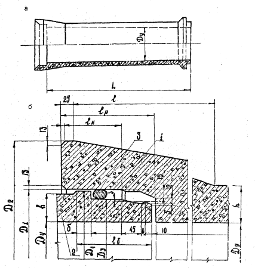
Рис. 1. Труба железобетонная
напорная виброгидропрессованная (ГОСТ
12586.0-83):
а - общий вид, 6 - деталь стыкового
соединения;
1 - раструбная часть; 2 - втулочная часть; 3 - резиновое кольцо
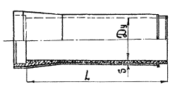
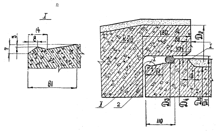
Рис.2. Труба
железобетонная напорная центрифугированная (ГОСТ 16953-78): а - общий вид, б - деталь стыкового соединения:
1 - втулочная часть трубы; 2 - резиновое кольцо
Основные размеры железобетонных виброгидропрессованных труб со стальным цилиндром (ТУ 33-10-84) приведены в табл. 4 и на рис. 3.
Основные размеры железобетонной центробежно-прокатной трубы ТРНЦ 2,5-1 (ТУ 33-22-83) приведены на рис. 4.
2. Железобетонные трубы поставляются в комплекте с резиновыми уплотнительными кольцами ТУ (38-105.1092-77 и ТУ 38-Т05. 1222-81) рис.5. Размеры резиновых колец приведены в табл. 5.
3. Пригодность трубы для работы на проектном давления определяют по заводской маркировке ОТК и характеристике трубы, нанесенной несмываемой краской на поверхность трубы.
4. При получении партии труб с завода-изготовителя необходимо осуществлять их выборочный осмотр с целью выявления возможных дефектов.
5. Если в процессе осмотра возникнут сомнения в отношении прочности труб, а также в случае разрушения труб или потере герметичности первого участка трубопровода при предварительном его испытании, рекомендуется подвергать данную партию труб выборочному испытанию на стенде на величину испытательного давления.
6. По окончании осмотра полученной партии труб и резиновых уплотнительных колец, проверки их размеров, а также предварительного испытания труб на стенде, на все дефектные трубы и резиновые уплотнительные кольца должны быть своевременно оформлены акты и предъявлена рекламация заводу-изготовителю в установленном порядке.
|
Диаметр условного прохода, ДВН |
Внутренний .диаметр раструба, ДР |
Наружный 'диаметр втулочного конца, ДВ |
Глубина раструба, мм |
Длина втулочного конца трубы, мм |
Длина трубы, мм |
|
1400 |
1544 |
1542 |
140 |
145 |
5225 |
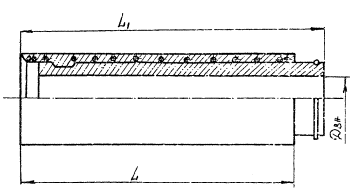
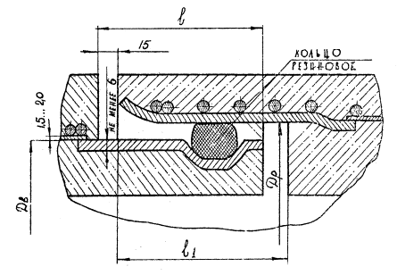
Рис. 3. Труба железобетонная
напорная виброгидропрессованная со стальным цилиндром (ТУ 33-10-84)
а - общий вид; б - деталь стыкового соединения
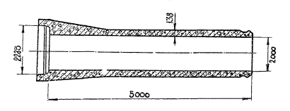
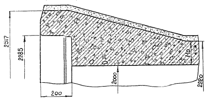
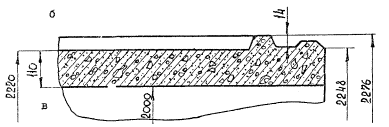
Рис. 4. Труба железобетонная центробежно-прокатная ТРНЦ 2,5-1 (ТУ
33-22-83):
а - общий вид; б - раструбная часть стыкового соединения; в - втулочная часть
стыкового соединения
|
Условный проход трубы, мм |
Внутренний диаметр резинового кольца (d1), мм |
Диаметр нового сечения рези-кольца (d2), мм |
|
1400 |
1440 |
25 |
|
1600 |
1650 |
30 |
|
2000 |
2005 |
28 |
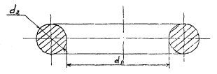
Рис. 5. Резиновое уплотнительное кольцо круглого сечения (ТУ 38-105.1092-77 и ТУ 38-105.1222-81)
1. Если грунты, в которых укладываются трубы, агрессивны по отношению к бетону и резиновым уплотнительным кольцам, то необходимо предусматривать защитные мероприятия.
2. Наиболее распространенный способ защиты железобетонных труб от коррозии - гидроизоляция их битумом или битумно-минеральной мастикой.
Состав битумно-минеральной мастики приведен в таб. 6.
3. В качестве минерального наполнителя применяются доломитизированный известняк средней плотности, асфальтовый известняк или доломит.
4. Приготовляют битумно-минеральную мастику в котлах смесителях.
Краткая характеристика котлов смесителей приведена в табл. 7
|
Марка мастики |
Содержание компонентов в мастике, % по массе |
||
|
Битум БН-1У ГОСТ 6617-56 или БНИ-IV |
Битум БН-V (ГОСТ 6617-56 или БНИ-V |
Минеральный наполнитель |
|
|
I |
75 |
- |
25 |
|
II |
- |
75 |
25 |
Примечание. Мастика марок I и II применяется при проведении работ в летнее время
|
Показатели |
Марка оборудования |
||
|
АГРК-5 |
УВТМ-2 |
УБК-81 |
|
|
Полезная емкость, л |
1200 |
2000 |
4000 |
|
Производительность, кг/ч |
450….700 |
1400 |
1200 |
|
Температура нагрева, °С |
180 |
180 |
180 |
|
Вид топлива |
Тракторный керосин или дизельное топливо |
||
|
Масса, т |
4,1 |
1,4 |
8,6 |
|
Разработчик |
|
Трест "Оргтехстрой" Минэнерго |
СКБ "Газстроймашина" |
|
Завод-изготовитель |
Сафроновский РМЗ Минстроя СССР |
|
|
5. Для предупреждения коксования битумной мастики в процессе ее приготовления или разогревания необходимо соблюдать температурный режим:
180…200°С - не более 1ч;
160…170°С - не более 3 ч.
6. Подготовку поверхности изолируемых железобетонных труб производят в следующей последовательности:
очистка изолируемой поверхности от пыли, загрязнений и масляных пятен;
заделка отколов или коверн в поверхностном слое бетона цементно-песчаным раствором;
сушка изолируемой поверхности (бетон в поверхностном слое должен иметь влажность не более 5%).
7. Перед нанесением битума или битумной мастики необходимо поверхность труб грунтовать. Битумные грунтовки изготовляют из битумов марки БН-У или БНИ-У, растворенных в неэтилированном авиационном (Б-70) или автомобильном (А-72 или А-76) бензине в пропорции 1:3 по объёму или 1:2 по массе.
Для разжижения битума также можно применять уайт-спирит.
Перед растворением битум охлаждают до температуры 70 °С. Во избежание загорания, битум льют в бензин непрерывно помешивая.
Приготовленная грунтовка хранится в герметически закрытой таре.
8. Разжиженные битумы наносят на поверхность при помощи битумо-красконагнетательных установок с распылителями, в которых битумный материал подаётся к распылителю шестеренчатым насосом или пневматически, путём вытеснения сжатым воздухом.
При небольшом объёме работ грунтовку можно наносить вручную кистями и валиками.
9. Гидроизоляция из битумов и битумных мастик наносится на загрунтованную, просушенную поверхность при температуре +150…+170°С в два-три слоя суммарной толщиной 2..4 мм при помощи битумонасосных установок, рассчитанных на нанесение горячих битумных составов.
10. Каждый последующий слой гидроизоляции наносится только после затвердения и просушки ранее нанесенного.
11. Не допускается наносить гидроизоляцию на влажную поверхность трубы, а также при снегопаде, дожде, тумане и сильном ветре.
1. Строительство трубопроводов ведут поточным методом, основанным на комплексной механизации всех основных видов работ. Для этого рекомендуется организовать комплексно-механизированную бригаду, работающую по единому наряду.
2. В структуре комплексной бригады необходимо предусматривать специализированные звенья, которые двигаясь впереди группы, выполняли бы следующие работы:
устройство переходов через различные препятствия;
строительство сооружений на сети;
установку упоров (постоянных и временных).
3. Строительство трубопроводов осуществляется с максимальным использованием средств механизации, применяя комплексные узлы фасонных частей, арматуры и сборные конструкции колодцев и других сооружений на сети.
4. Весь период строительства разделён на два этапа: подготовительный и основной.
5. В состав подготовительного этапа входит разбивка трассы трубопровода, расчистка полосы отвода от древесно-кустарниковой растительности и камней, прокладка временных автодорог, устройство бытовых помещений, склада материалов и т.д., доставка на приобъектный склад необходимых строительных материалов и оборудования.
5. Основной этап включает доставку на трассу труб, отрывку траншеи, подготовку основания, монтаж труб, обратную засыпку траншеи, предварительное и окончательное испытания трубопровода.
1. Доставку железобетонных труб большого диаметра на трассу трубопровода производят автомобильным транспортом или тракторами со специально оборудованным прицепом.
Технико-экономические показатели использования транспортных средств различного вида приведены в табл 8.
|
Вид транспорта |
Скорость доставки труб, км/ч |
Расстояние перевозки, км |
Стоимость перевозки, руб/тыс.км |
|
Автомобильный |
20…30 |
до 200 |
6…20 |
|
Тракторный |
3…5 |
до 10 |
10…45 |
2. При погрузке, разгрузке и перевозке железобетонных труб необходимо исключить возможность повреждения как внешней поверхности труб, так и их раструбных и втулочных частей.
3. Машины, используемые для транспортировки труб, дооборудуются с таким расчетом, чтобы во время движения не было смещения перевозимых труб. Для этого устанавливаются передние щиты безопасности, боковые стойки, прокладки, стяжки и т.д.
Металлические части соприкасающихся с поверхностью трубы конструкций транспортных средств следует обрезинить.
4. При перевозке железобетонных труб диаметром 2000 мм (ТУ-33-22-83) необходимо устанавливать внутренние крестообразные распорки.
5. Организация работы автотранспорта должна обеспечивать бесперебойное обслуживание объекта в соответствии с календарным графиком строительства трубопровода.
6. Погрузку и разгрузку труб осуществляют грузоподъемными механизмами (различные виды кранов) с помощью грузозахватных специальных приспособлений, обеспечивающих надежность строповки и исключающих возможность повреждения внешней поверхности труб и их торцов.
Марки и краткие технические характеристика кранов, применяемых при погрузке железобетонных труб большого диаметра, приведены в табл. 9.
|
Марки |
Краткая техническая характеристика |
|
1 |
2 |
|
Кран автомобильный КС-3562Б |
Грузоподъемностью 10 т с решетчатой стрелой и гидравлическим приводом на шасси автомобиля МАЗ-5334 |
|
Кран автомобильный ЕС-3571 |
Грузоподъемностью 10 т с телескопической стрелой и гидравлическим приводом на шасси автомобиля МАЗ-500А или МАЗ-5334 |
|
Кран автомобильный КС-3575А |
Грузоподъемностью 10т с гидравлическим приводом на шасси автомобиля ЗИЛ-133ГЯ |
|
Кран автомобильный КС-4561 |
Грузоподъемностью 16 т с решетчатой стрелой, дизель-электрическим приводом и гидравлическими выносными опорами на шасси автомобиля КрАЗ-257К1 |
|
Края автомобильный КС-4571 |
Грузоподъемностью 16 т с основной телескопической стрелой и гидравлическим приводом на шасси автомобиля КрАЗ-257К1 |
|
Кран автомобильный КО-4572 |
Грузоподъемностью 16 т с гидравлическим приводом на шасси автомобиля КамАЗ-53213 с телескопической стрелой |
|
Кран пневмоколесный короткобазовый, КС-4371 |
Грузоподъемностью 16 т с гидравлическим приводом |
|
Кран пневмоколесный КС-4362 |
Грузоподъемностью 16 т с дизель-электрическим приводом |
|
Кран пневмоколесный КС-5363 |
Грузоподъемностью 25 т с телескопической стрелой и дизель-электрическим двигателем |
|
Кран пневмоколесный КС-5363А |
Грузоподъемностью 25 т с дизель-электрическим многомоторным приводом |
|
Кран на специальном шасси автомобильного типа КС-5473 |
Грузоподъемностью 25 т |
|
Кран гусеничный стреловой МКГ-25БР |
Грузоподъемностью 25 т о дизель-электрическим приводом |
Краткая техническая характеристика грузозахватных приспособлений приведена в табл. 10
|
Показатели |
ПМ-1428 |
МЕ-16 |
|
Тип захвата |
Мягкое полотенце |
Автоматический ковшевой захват |
|
Диаметр поднимаемых труб, мм: |
1400 |
1400…2000 |
|
длина |
5100 |
3100 |
|
ширина |
400 |
1670 |
|
толщина (высота) |
10 |
4250 |
|
Масса, кг |
394 |
1900 |
|
Разработчик |
СКБ "Газстроймашина" |
ВНИИЗеммаш, УкрНИИГиМ |
Примечание: Конструктивное описание клещевого захвата конструкции ВНИИЗеммаш (МВ-16) приведено в приложении 3.
7. При разгрузке и погрузке железобетонных труб запрещается сбрасывать их с автотранспорта, ударять друг о друга и о борта автомобиля, пропускать канат через полость трубы, а также цеплять крюки за концы труб и перемещать трубы по земле волоком.
8. При раскладке вдоль трассы трубы укладывают на спланированную поверхность. Для удобства захвата и сохранности раструбной части, трубы укладывают на деревянные подкладки.
Высоту подкладок следует принимать такой, чтобы исключить возможность опирания раструба на землю. Подкладки устанавливают на расстоянии 1 м от торцов труб.
9. Резиновые уплотнительные кольца перевозят в мешках или ящиках, куда их складывают пачками или связками.
10. Кольца должны быть защищены от попадания на них масел и растворителей (бензина, бензола и др.), а также от прямых солнечных лучей.
1. В состав земляных работ при строительстве линейной части напорных трубопроводов входят: отрывка траншеи, подготовка основания под трубы, обратная засыпка трубопровода.
2. При производстве земляных работ необходимо предусматривать мероприятия, обеспечивающие сохранность растительного слоя почвы.
3. Размеры и профиль траншеи устанавливают проектом в зависимости от вида труб, их диаметра и гидрогеологических условий в соответствии с требованиями СНиП III-8-76 "Земляные, сооружения".
4. Ширину траншеи по дну необходимо увязывать с габаритами рабочего органа землеройных машин, механизмов, производящих стыковку труб и возможностью проведения наиболее качественного уплотнения грунта обратной засыпки в "пазухах".
5. Разработку протяженных траншей предпочтительнее вести экскаваторами непрерывного действия.
6. Использование одноковшовых экскаваторов следует рассматривать, как исключение и применять лишь там, где работа экскаватора непрерывного действия невозможна:
на участках горизонтальных и вертикальных углов поворота;
на переходах через все виды искусственных и естественных препятствий;
в грунтах с крупными включениями, обводненных сыпучепесчаных и разрыхленных скальных;
в случаях, когда экскаваторы непрерывного действия не имеют возможности разрабатывать траншею заданных параметров.
7. Выбор метода разработки траншеи и вида землеройной техники зависит от параметров траншеи, характера местности, категории грунта, гидрогеологических условий и наличия средств механизации в строительных организациях
8. Отвал вынутого минерального грунта располагают с одной стороны траншеи, оставляя противоположную сторону свободной для прохода механизмов и размещения труб. При рельефе местности с выраженным уклоном, отвал следует располагать с нагорной стороны траншеи. Такое расположение отвала поможет предотвратить попадание ливневых вод в траншею.
9. Если проектом не предусмотрено устройство искусственного основания, то железобетонные трубы укладывают на естественный грунт ненарушенной структуры.
10. Устройство естественного основания ненарушенной структуры возможно в любых грунтах за исключением болотисто-торфяных, разжиженных (плывунов) и скальных.
11. Отдельные камни, валуны и другие крупные включения должно быть из основания удалены, а образовавшиеся углубления закопаны пригодным местным или песчаным грунтом и тщательно утрамбованы до естественной плотности грунта слагающего основание.
12. Переборы грунта в основании траншеи не допускаются. Случайные переборы грунта землеройными машинами необходимо засыпать в соответствии с требованиями вышеизложенного пункта 11.
13. Для сохранения ненарушенной структуры грунта в основании траншеи рекомендуется производить его недобор до проектной отметки. Величины недоборов приведены в СНиП III-8-76 "Земляные сооружения".
14. Подготовка естественного основания под железобетонные трубы заключается в доработке дна траншей до проектной отметки, нарезке ложа и отрывке приямков.
15. Все операции по подготовке естественного основания под трубы выполняются с помощью машины для монтажа трубопроводов (МВ-15) конструкции ВНИИЗеммаш и УкрНИИГиМ.
Краткая техническая характеристика и принцип ее работы приведены в приложении 1.
При строительстве железобетонных трубопроводов работы необходимо организовывать так, чтобы подготовленная траншея оставалась открытой в течение возможно минимального срока. Продолжительность этого минимального срока принимается с обязательным учетом свойств данного грунта и местных атмосферных условий, но не более 1-2 дней.
При вынужденных перерывах больше допустимого срока необходимо принимать меры по сохранению естественных свойств грунта основания, для этого необходимо:
защитить траншею от попадания поверхностных вод;
исключить приток грунтовых вод в траншею;
оставить защитный слой грунта в основании траншеи толщиной не менее 30 см.
17. Завершающим этапом земляных работ является засыпка трубопровода. Её выполняют механизированным способом в следующей последовательности:
сначала мягким минеральным грунтом (без крупных включений) производят подбивку пазух и обратную засыпку траншеи на 0,35 м выше верха трубы. При этом начальный слой грунта обратной засыпки на высоту 0,5 м наружного диаметра трубы засыпают с тщательным послойным уплотнением. На этом этапе необходимо предусматривать технологический перерыв, в течение которого производят предварительные испытания трубопровода. На время предварительных испытаний места стыковых соединений труб оставляют открытыми. Для подачи грунта в траншею используют машины и механизмы, обеспечивающие сохранность труб и их стыковых соединений (одноковшовые экскаваторы, обратная лопата или грейфер, роторные траншеезасыпатели). Уплотнение грунта обратной, засыпки производят вибротрамбовками, предназначенными для работы в стеснённых условиях;
окончательную засыпку трубопровода можно производить бульдозерами без уплотнения, но с обязательной отсыпной по. трассе траншеи валика, размеры которого должны учитывать последующую естественную осадку грунта.
Схема обратной засыпки трубопровода приведена на рис. 6.
18. При прохождении трассы трубопровода по территории населённого пункта или через дороги, грунт обратной засыпки необходимо уплотнять на всю глубину траншеи.
Оборудование, предназначенное для уплотнения грунта обратной засыпки, приведено в таблице 11.
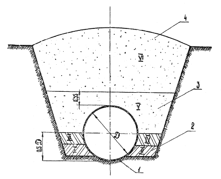
Рис.
6.
Схема обратной засыпки трубопровода:
1 - труба; 2 - грунт обратной засыпки с послойным уплотнением; 3 - неутепленный
защитный слой грунта; 4 - неутепленный грунт обратной засыпки, подаваемый в
траншею о помощью бульдозера; I, II, III, IV, V, VI - последовательность обратной засыпки
|
Тип и марка оборудования (завод-изготовитель,организация-разработчик) |
Краткая техническая характеристика |
|
1 |
2 |
|
Навесные вибротрамбовки ПВТ-3 (ЦНИИОМТ Госстроя СССР) |
Масса 2150 кг (без электрооборудования), привод электрический, площадь трамбующей плиты 0,64 м2, глубина уплотнения 0,6…0,8 м, базовая машина: кран или экскаватор |
|
ЗТМ-2 (Ленинградский филиал института "Оргэнергострой" Минэнерго СССР) |
Масса 2500 кг, привод электрический, площадь трамбующей плиты 0,65 м2, глубина уплотнения 0,8…1,4 м, базовая машина: кран или экскаватор |
|
БТ-3 (Ярославский политехнический институт) |
Масса 750 кг, привод гидравлический, площадь трамбующей плиты 0,5 м2, глубина уплотнения 0,15…0,45м, и базовая машина: гидравлический экскаватор |
|
Трамбовки электрические ручные (завод "Электроинструмент" Минстройдормаша СССР, Даугавпилс) |
|
|
ИЭ-4502 |
Масса 75 кг, средняя производительность 45 м3/ч, глубина уплотнения 40 см, электродвигатель синхронный трехфазный с короткозамкнутым ротором, мощностью 1,5 кВт, напряжение- 220 В, габаритные размеры 970x950x480 мм |
|
ИЭ-4503 |
Масса 14 кг, средняя производительность 6 м3/ч, глубина уплотнения 15 см, электродвигатель синхронный трехфазный с короткозамкнутым ротором, мощностью 0,27 кВт, напряжение 220 В, габаритные размеры 200×390×750 мм. |
|
ИЭ-45С5 |
Масса 27 кг, средняя производительность 13 м3/ч, глубина уплотнения 20 см, электродвигатель синхронный трехфазный с короткозамкнутым ротором, мощностью 0,6 кВт, напряжение 220 В, габаритные размеры -225×440×785 мм |
|
ПЭ-4506 |
Масса 17,6 кг, средняя производительность 7,8 м3/ч, глубина уплотнения, 15 см, электродвигатель синхронный трехфазный с короткозамкнутым ротором, мощностью 0,6 кВт, напряжение 220 в |
|
Пневматические ручные вибротрамбовки (завод "Пневмашина" Ленинград) |
|
|
ТР-1 |
Массе 11 кг, рабочее давление воздуха 0,5 МПа, расход воздуха 0,45 м3/мин |
|
ПТР-1 |
Масса 14 кг, рабочее давление 0,6 МПа, расход, воздуха 1,5 м3/мин |
|
Самопередвигающиеся вибротрамбовки (ЦРМЗ "Волгоградгидростроя" Минэнерго СССР) |
|
|
ВУТ-5 |
Масса 100 кг, возмущающая сила 1,1 кН (110 кгс), размер плиты 360×410 мм |
|
ВУТ-4 |
Масса 200 кг, возмущающая сила 22 кН (2200 кгс), размер плиты 500×428 мм |
Примечание. Описание конструкции и принципа работы навесной вибротрамбовки ВТ-3 приведено в приложении 4
1. К монтажу железобетонного трубопровода приступают только после подготовки основания (доработки дна траншеи до проектной отметки, нарезки лога и отрывки приямков).
2. Перед подачей трубы в траншею необходимо провести ее тщательный визуальный осмотр, обратив особое внимание на раструбную и втулочную части.
Не допускается монтировать трубы, имеющие раковины, поры, наплывы и отколы бетона на внутренней поверхности калиброванной части раструба и на наружной поверхности втулочного конца в зоне расположения резинового уплотнительного кольца, заусенцы, наплывы и отколы бетона на заходной фаске раструба, трещины на наружной и внутренней поверхности трубы, оголение спиральной и продольной арматуры с торцов труб.
3. Для монтажа напорных трубопроводов применяют автомобильные, пневмоколесные и гусеничные краны. Их выбор производят по грузоподъемности на соответствующем вылете стрелы. Вылет стрелы определяют в зависимости от намеченной схемы работ, т.е. от возможного положения крана относительно траншеи.
4. При монтаже железобетонных труб большого диаметра, крановое оборудование необходимо размещать как можно ближе к бровке траншеи, т.к. в этом случае у крана будет наименьший вылет стрелы при максимальной грузоподъемности.
5. Минимальный вылет стрелы определяют из равенства
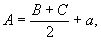
где В - ширина траншеи по дну;
С - ширина ходовой части крана или расстояние между наружными краями опор крана;
а - допустимое расстояние от подошвы откоса траншеи до ближайшей опоры крана (см.п.3.8 СНиП III-4-80 "Техника безопасности в строительстве").
При невозможности соблюдения этого равенства стенки траншеи должны быть укреплены.
6. Раскладку труб в трассовых условиях осуществляют либо по параллельной схеме (трубы раскладывают параллельно траншее в таком порядке, в каком они должны быть уложены), либо по поперечной схеме - перпендикулярно оси траншеи.
7. При расположении крана у бровки траншеи, трубы раскладывают либо за краном, либо, если ширина монтажной площадки ограничена, вдоль бровки траншеи. Однако в этом случае кран сможет подойти к трубам только с одной стороны, что значительно ограничивает возможность его маневра.
Схема монтажа трубопровода показана на рис. 7.
8. Строповка труб осуществляется при помощи грузозахватных приспособлений, марки и краткие технические характеристики которых даны в разделе 5 настоящего пособия.
9. Подготовка железобетонных труб (ТУ 33-10-84 и ТУ 33-22-83) к стыковке, имеющих на втулочной части канавку, заключается в следующем: в канавку втулочной частя трубы устанавливают резиновое кольцо, при этом необходимо проконтролировать, чтобы кольцо легло в канавку равномерно, без перекручивания.
Для облегчения стыковки внутреннюю поверхность раструба, ранее уложенной трубы и наружную поверхность резинового кольца, одетого на втулочную часть монтируемой трубы, смазать мыльным раствором или графитно-глицериновой смазкой.
10. Подготовка к стыковке железобетонных труб с гладкой втулочной частью (ГОСТ 12586.0-83 и ГОСТ 16953-78) заключается в следующем: на втулочный конец трубы одевают резиновое кольцо, при этом необходимо, чтобы наружная поверхность втулочного конца трубы была сухой и чистой, в противном случае ее протирают сухой тряпкой и высушивают сухим цементом или мелом в порошке. Начальное положение резинового кольца следует считать правильным, если оно расположено без перекручивания по всей своей окружности. Для облегчения стыковки наружную поверхность резинового кольца припудривают сухим цементом или мелом в порошке, т.к. в этом случае при стыковке будет происходить закатывание резинового кольца в раструбную щель.
11. Стыковку железобетонных труб большого диаметра производят машиной для монтажа МВ-15, с помощью центратора МВ-17 конструкции ВНИИЗеммаш и УкрНИИГиМ.
Краткие технические характеристики и принцип их работы приведены в приложениях 1 и 2.
Схема стыковки железобетонных труб с помощью машины для монтажа трубопроводов МВ-15 показана на рис. 8.
12. Расстроповку трубы производят только после проверки правильности ее укладки и подбивки пазух.
13. Применение всякого рода подкладок для выравнивания трубы запрещается.
14. Раструбную щель состыкованных труб заделывают цементно-песчаным раствором. Во избежание разрушения цементно-песчаного замка, заделку раструбных стыков необходимо производить с отставанием на 3…4 трубы.
15. В процессе монтажа трубопровода необходимо следить за тем, чтобы внутренняя поверхность труб не загрязнялась и внутри трубопровода не оставались посторонние предметы.
16. При перерывах в работе концы уложенного трубопровода следует закрывать заглушками.
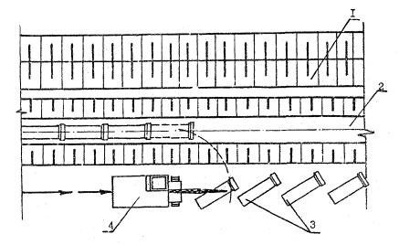
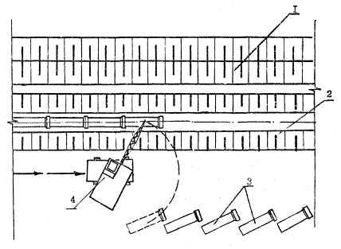
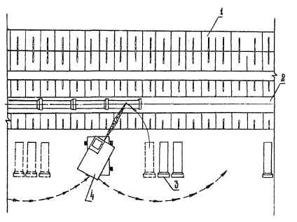
Рис. 7. Схема монтажа
железобетонных труб;
а - монтаж трубопроводов пря параллельной схеме раскладки труб; б - монтаж
трубопровода при поперечной схеме раскладки труб:
1 - отвал грунта; 2 - траншея; 3 - железобетонные трубы; 4 - монтажный кран
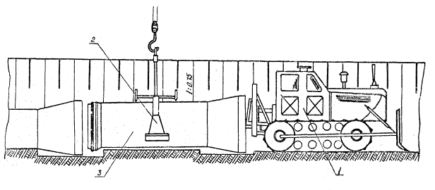
Рис. 8. Стыковка
железобетонных труб с помощью машины для монтажа трубопроводов:
1 - машина для монтажа трубопроводов МВ-15; 2 - клещевой захват МВ-16; 3 -
железобетонная труба большого диаметра
1. Напорный железобетонный трубопровод или участок трубопровода перед сдачей в эксплуатацию должен быть подвергнут испытанию на прочность и герметичность гидравлическим или пневматическим способом.
2. Способ испытания устанавливается проектом в зависимости от климатических условий в районе строительства и наличия воды в период испытаний.
Гидравлический способ испытаний оросительных трубопроводов применяется при плюсовой температуре и при наличии в районе водоисточника для наполнения трубопровода водой. Указанный способ является наиболее экономичным и безопасным.
Пневматический способ применяется при возникновении трудностей с выполнением гидравлических испытаний (отсутствие водоисточника на месте испытаний, наступление похолоданий и. т.д.).
3. Строительно-монтажной организации предоставляется право, по согласованию с проектной организацией и заказчиком, изменять принятый способ испытания в зависимости от конкретных условий их проведения.
4. Испытания трубопроводов должны производиться дважды:
предварительное испытание на прочность - при открытых стыках, частично присыпанной траншеи, но до установки арматуры;
окончательное испытание или приемочное на герметичность - после засыпки траншеи до проектной отметки, но до установки арматуры вместо которой на время испытаний устанавливают заглушки.
5. Предварительное испытание напорных трубопроводов допускается производить строительной организацией без участия представителей заказчика и эксплуатирующей организации. По итогам предварительного испытания составляется акт, утверждаемый главным инженером строительной организации.
6. Предварительное испытание трубопровода или его отдельных участков, доступных осмотру в рабочем состоянии, или по условиям производства работ должны быть немедленно засыпаны, разрешается не производить.
7. Окончательное испытание железобетонных трубопроводов производится строительно-монтажной организацией при участии представителей заказчика и эксплуатирующей организации.
8. Длина испытуемого участка принимается не более 1 км.
9. Перечень оборудования, необходимого для проведения испытаний, приведён в ВТР С-6-76 "Руководство по испытаниям оросительных трубопроводов на прочность и герметичность".
Гидравлическое испытание
1. Величина испытательного давления при предварительном и. окончательном испытании устанавливается проектом. При отсутствии в проекте этих данных величину гидравлического испытательного давления принимают в соответствии с данными табл. 12.
|
Трубопровод |
Величина испытательного давления, кгс/см |
|
Железобетонный, предварительно напряженный |
Для труб I и II класса - расчетное внутреннее давление (+3) |
|
Для труб III класса - расчетное внутреннее давление (+2)
|
2. Перед началом испытаний из трубопровода необходимо удалить воздух, для чего в местах возможного скопления воздуха устанавливают воздухоспускные краны.
3. Предварительное гидравлическое испытание железобетонного трубопровода под испытательным давлением должно продолжаться не менее 10 мин, после чего давление снижается до расчётного внутреннего и производится внешний осмотр.
4. При осмотре трубопровода разрешается производить подкачку воды для поддержания расчетного внутреннего давления.
5. Напорный трубопровод считается выдержавшим предварительное гидравлическое испытание, если в нем под испытательным давлением не произошло разрыва труб, фасонных частей и стыковых соединений, а под расчетным внутренним давлением не будет обнаружено утечек воды.
6. Проведение окончательного гидравлического испытания напорного железобетонного трубопровода может быть начато, если с момента засыпки траншеи грунтом и заполнения трубопровода водой прошло не менее 72 часов.
Если трубопровод был заполнен водой до засыпки грунтом, то указанное время устанавливают с момента засыпки.
7. В процессе проведения окончательного гидравлического испытания трубопровода величина расхода вкачиваемой воды должна быть меньше величин, приведенных в табл. 13.
|
Внутренний диаметр трубопровода мм |
Допускаемая величина расхода вкачиваемой воды на участок длиной 1 км при расчетном внутреннем давлении, л/мин |
|
1400 |
5,0 |
|
1600 |
5,5 |
|
2000 |
6,9 |
Примечание. При длине испытываемого участка трубопровода менее 1 км приведенные в табл. 12 величины расхода вкачиваемой воды, умножаются на его длину, выраженную в км.
8. Участок трубопровода считается выдержавшим окончательное испытание, если не обнаружено нарушений целостности трубопровода, а расход вкачиваемой воды не превышает допустимую величину по таблице.
Пневматическое испытание
1. Пневматический способ испытания может быть применен для напорных железобетонных трубопроводов, эксплуатирующихся под внутренним давлением до 0,5 МПа (5 кгс/см2).
2. Предварительное пневматическое испытание железобетонных трубопроводов после их частичной засыпки производят при испытательном давлении 0,15 МПа (1,5 кгс/см2).
3. Под испытательным давлением трубопровод выдерживают в течение 30 мин. Для поддержания непитательного давления разрешается производить подкачку воздуха.
4. Осмотр трубопровода с целью выявления дефектных мест разрешается производить при снижении давления до 0,1 МПа (1 кгс/см2).
5. Выявление дефектов на испытываемом участке трубопровода может быть произведено следующим образом:
по пузырям, образующимся в местах утечки воздуха при покрытии стыков и других мест трубопровода мыльной эмульсией;
по запаху одорированного или задымленного воздуха, вытекающего через неплотности на испытываемом участке трубопровода. Одорант добавляют к подаваемому компрессором воздуху.
6. Дефекты в трубопроводе, выявленные и отмеченные при его осмотре, устраняют только после снижения избыточного давления до нуля. После устранения дефектов испытание следует произвести вторично.
7. Трубопровод считается выдержавшим предварительное испытание, если при тщательном осмотре труб не обнаружено дефектов в стыках, нарушения целостности трубопровода, а также сдвига или деформации упоров.
8. Окончательно пневматическое испытание трубопровода производят после его засыпки. Величина окончательного испытательного давления принимается равной 0,6 МПа (6 кгс/см2)
9. Трубопровод считается выдержавшим окончательное пневматическое испытание, если не будет нарушена его целостность и величина падения давления за 6 часов испытания не превысит 100 мм водного столба.
Машина для монтажа трубопроводов предназначена для планировка дна траншеи, нарезки ложа, отрывки приямков, стыковки труб и протаскивания центратора.
Машина смонтирована на базе трактора Т-130МБГ-1 (рис. 9) и состоит из следующих узлов: ложеприямокопатель, навесная рама, трактор, ходоуменьшитель, гидросистема, системе выдерживания уклона, стыкующая балка.
Ложеприямокопатель является основным рабочим органом и включает: фрезерный рабочий орган: зачистное устройство, гидроцилиндр качания фрезы, два гидроцилиндра качания рамы фрезы.
Подъемная рама представляет собой сварную пространственную металлоконструкцию, снабженную четырьмя роликами, перемещающимися в направляющих навесной рамы, что позволяет опускать фрезерный рабочий орган на глубину разработки ложа или приямка и поднимать его в транспортное положение. К подъемной раме посредством шарнирной опоры и двух гидроцилиндров качания подвешивается промежуточная рама фрезы. Фрезерный рабочий орган представляет собой фрезу-метатель с приводом от гидромотора и одноступенчатый редуктор.
Навесная рама имеет вертикальные направляющие для размещения в них роликов подъёмной рамы и гидроцилиндра подъема фрезерного рабочего органа. Шток гидроцилиндра посредством двух звёздочек и цепей связан с подъемной рамой. Такая схема позволяет увеличить ход подъёмной рамы в два раза по сравнению с ходом цилиндра.
Гидросистема машины служит для привода фрезы-метателя, бесступенчатого регулирования скорости рабочего хода, подъема и опускания ложеприямокопателя, подъема и опускания стыкующей балки и стыковку труб, качания рамы фрезы при отрытии ложа и приямков, подъёма, опускания и поворота бульдозерного отвала.
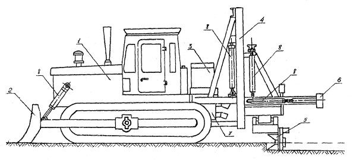
Рис. 9. Машина для
монтажа трубопроводов МВ-15:
1 - трактор Т-130МБГ-1; 2 - бульдозерный, отвал; 3 - гидробак; 4 - навесная: рама;
5 - ложеприямокопатель; 6 - стыкующая балка; .7 - ходоуменьшитель; 8 -
гидроцилиндры
Система автоматики обеспечивает отрытие ложа с заданным продольным уклоном путем регулирования высотного положения фрезерного рабочего органа. Задача управления сводится к внедрению фрезы в грунт на требуемую глубину и обеспечению ее положения с заданной точностью по траектории параллельной копиру, установленному по заданному уклону. Регулирование высотного положения фрезы осуществляется с помощью гидроцилиндра подъема фрезерного рабочего органа. Включение его производится по электрическим сигналам датчика высоты и пульта управления, поступающим на золотники с электрогидравлическим управлением.
ТЕХНИЧЕСКАЯ ХАРАКТЕРИСТИКА МАШИНЫ ДЛЯ МОНТАЖА ТРУБОПРОВОДОВ МВ-15
|
Базовая машина |
Трактор Т-13СМБГ-1 |
|
Мощность двигателя, кВт |
106,6 |
|
Техническая производительность, м/ч |
Не менее 12,5 |
|
Скорость передвижения рабочая с ходоуменьшителем, м/ч |
0-1470 |
|
Конструктивная масса, кг |
23500 |
|
Среднее давление на грунт, МПа |
0,04 |
|
Габаритные размеры, мм |
|
|
длина |
9590 |
|
ширина |
3880 |
|
высота |
3100 |
|
Оборудование для отрывки ложа и приямков: |
|
|
тип рабочего органа |
фреза-метатель |
|
.диаметр, м |
1,05 |
|
ширина, м |
0,26 |
|
частота вращения, об/мин |
260 |
|
угол качания фрезы при отрытии ложа |
±35° |
|
угол качания рамы фрезы при отрытии приямков |
±35° |
|
привод фрезы |
Гидравлический |
|
Оборудование для стыковки; |
|
|
диаметр гидроцилиндров, мм |
100 |
|
ход толкающего бруса, мм |
800 |
|
усилие на толкающем брусе, кН |
150 |
|
Удельный расход топлива, кг/м |
2,1 |
|
.Организация-разработчик |
ВНИИЗеммаш, УкрНИИГиМ |
Центратор предназначен для обеспечения соосности раструбных железобетонных труб в процессе стыковки. Он состоит (рис.10) из наружной трубчатой рамы с проушинами для установки качающихся рычагов, внутренней выдвижной трубы с тремя проушинами для крепления рычагов настройки, балок с роликами, винтового механизма со штурвалом для настройки центратора на требуемый диаметр трубы.
При перемещении посредством штурвала подвижной трубы происходит поворот рычагов и выдвижение балок с роликами в радиальном направлении, Таким образом достигается соосность стыкуемых труб.
ТЕХНИЧЕСКАЯ ХАРАКТЕРИСТИКА ЦЕНТРАТОРА МВ-17
|
Допуск соосности при использовании центратора, мм |
± 50 |
|
Габаритные размеры, мм |
|
|
Длина |
2510 |
|
Ширина |
1530 |
|
Высота |
1770 |
|
Конструктивная масса, кг |
1900 |
|
Разработчик |
ВНИИЗеммаш УкрНИИГиМ |
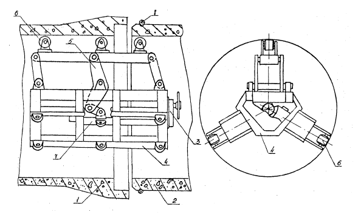
Рис. 10. Центратор МВ-17:
1 - раструбная часть трубы; 2 - втулочная часть трубы; 3 - винтовой механизм со
штурвалом; 4 - трубчатая рама; 5 - рычаги настройки; 6 - балка с роликами; 7 -
внутренняя выдвижная труба; 8 - резиновое кольцо
Захват предназначен для механизации работ по строповке и расстроповке труб, подачи их в траншею и укладки. Навешивается захват на крюк крана грузоподъёмностью 25...50 т. Схема захвата приведена на рис.11.
Захват полуавтоматический клещевого типа, сварной конструкции, состоит из двух основных рычагов, двух челюстей, двух верхних тяг, механизма настройки с фиксатором на требуемый диаметр труб, механизма фиксации и двух регулируемых вертикальных упоров.
Консольное расположение вертикальных упоров на кронштейнах облегчает установку захвата на трубе и уменьшает её угол наклона при транспортировании.
Четыре сменные рифленые накладки на концах челюстей при надевании захвата на трубу перекрываются пружинными планками, предотвращающими повреждение трубы. В процессе захвата трубы пружинные планки поднимаются и в действие вступают рифленые накладки, надежно удерживающие трубу в транспортном положении.
Настройка захвата на работу с трубой данного диаметра производится путем перестановки вертикального упора и поворота челюстей вокруг осей и фиксации стопором их положения через регулировочные планки.
ТЕХНИЧЕСКАЯ ХАРАКТЕРИСТИКА ЗАХВАТА МВ-16
|
Грузоподъёмность, кг |
15000 |
|
Габаритные размеры, мм |
|
|
Длина |
3100 |
|
Ширина |
1670 |
|
Высота |
4250 |
|
Конструктивная масса, кг |
1900 |
|
Разработчик |
ВНИИЗеммаш, УкрНИИГиМ |
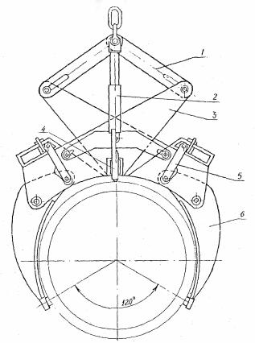
Рис. 11.
Полуавтоматический клещевой захват МВ - 16:
1 - верхняя тяга; 2 - механизм фиксация; 3 - основной рычаг; 4 - регулируемый
вертикальный упор; 5 - планка регулировочная для настройки захвата на различные
диаметры труб; 6 - челюсть
Грунтоуплотняющее устройство (рис.12) предназначено для послойного уплотнения грунта обратных засыпок в стесненных условиях. Устройство представляет собой вибротрамбующий рабочий орган, навешиваемый взамен ковша на стрелу гидрофицироваиного экскаватора типа ЭО-4121А.
Рабочий орган включает ударную часть, состоящую из трамбующей плиты и дебалансного возбудителя. Ударная часть при помощи вертикальных и горизонтальных резинометаллических амортизаторов соединена с рамкой вибротрамбующего рабочего органа.
Рама сварной конструкции состоит из двух трубчатых арок, соединяющихся нижними и верхними коробчатыми поясами. Нижний пояс обеспечивает устойчивое положение рабочего органа в горизонтальной плоскости и при отклонениях от нее. На верхнем поясе имеются две проушины, которые предназначены для соединения вибротрамбовки с рукоятью экскаватора и со штоком гидроцилиндра ковша. Привод возбудителя осуществляется от гидромоторов.
ТЕХНИЧЕСКАЯ ХАРАКТЕРИСТИКА ГРУНТОУПЛОТНЯЮЩЕГО УСТРОЙСТВА ВТ-3
Масса оборудования с базовой машиной, кг 14750
Масса навешиваемого на рукоять оборудования, кг 500
Размер уплотняющей плиты, м 0.5×1.0
Глубина уплотнения, м, 015…0,45
Коэффициент уплотнения 0,85….0,95
Номинальная частота колебаний, Гц 15….20
Продолжительность цикла уплотнения, с 15….30
Уплотняемые грунты малосвязанные и связанные
Разработчик Ярославский политехнический институт
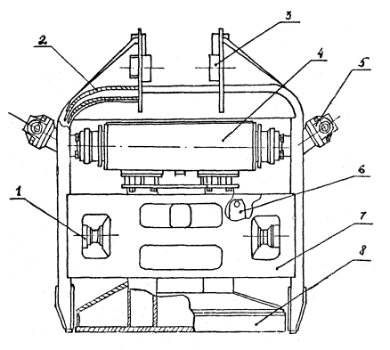
Рис. 12.
Грунтоуплотняющее устройство ВТ-3:
1 - горизонтальные резинометаллические амортизаторы; 2 - верхний коробчатый
пояс; 3 -проушины; 4 - дебалансный возбудитель; 5 - гидромотор; 6 -
вертикальные резинометаллические амортизаторы; 7 - нижний коробчатый пояс; 8 -
трамбующая плата
К самостоятельному управлению машиной для монтажа трубопроводов МВ-15 допускаются лица, имеющие удостоверение на право управления бульдозером, изучившие конструкцию машины, временную инструкцию по её эксплуатации и получившие удостоверение на право управления этой машиной.
Перед началом работы машинист обязан проверить надежность крепления всех узлов и механизмов, герметичность гидросистемы и, при необходимости, устранить неисправности. Проверить на малых оборотах в холостую вращение фрез, качание фрез, подъем, выдвижение стыкующей балки, подъем и опускание подвижной рамы, работу бульдозерного отвала.
При нарезке ложа и приямков не разрешается находиться в плоскости работающих фрез ближе, чем на 20 м. Спуск машины в траншею должен производиться по специально оборудованным съездам, продольный уклон которых не должен превышать 15°, поперечный - 5°.
Перед началом укладки труб необходимо проверить техническое состояние захвата МВ-16. При опускании механизма фиксации вертикальные опоры должны опираться на трубу. Необходимо проверить предохранительные замыкающие устройства, предотвращающие самопроизвольное выпадение грузов и его осевое смещение.
Контроль технической исправности центратора МБ-17 заключается в проверке винтовой опоры и фиксаторов. При перемещении центратора машиной для монтажа водоводов посредством тросов обслуживающему персоналу запрещается находиться в трубе между машиной МВ-15 и центратором.
При подготовке, гидравлического экскаватора ЭО-4121А к работе с трамбовкой ВТ-3 машинист обязан проверить надежность крепления вибротрамбовочного оборудования к рукояти экскаватора, соединения шлангов гидросистемы.
Работу вибротрамбовочного оборудования необходимо проверить опустив его на горизонтальную площадку.